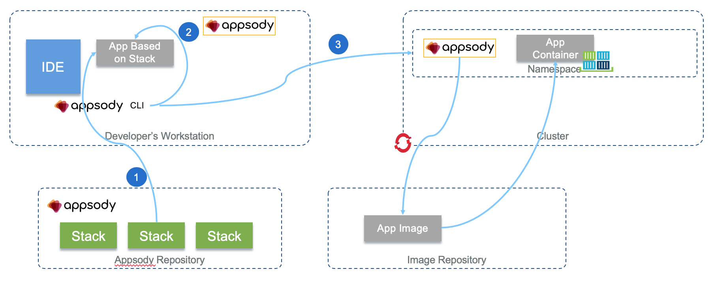

Cloud Native Development Summary
Source to image (s2i)
Source to image toolkit aims to simplify the deployment to OpenShift. It uses a build image to execute an assembly script that builds code and docker image without Dockerfile.
The following figure, shows the resources created by the oc new-app command when the argument is an application source code repository.

From an existing repository, s2i create add a set of elements to define the workflow into the repo. For example the command below will add Dockerfile and scripts to create a build image named ibmcase/buildorderproducer from the local folder where the code is.
s2i create ibmcase/buildorderproducer .
When the assemble script is done, the container image is committed to internal image repository. The CMD part of the dockerfile execute a run script.
Here is another command to build the output image using existing build image on local code:
s2i build --copy . centos/python-36-centos7 ibmcase/orderproducer
Note
s2i takes the code from git, so to use the local code before committing it to github, add the --copy argument.
- OpenShift builds applications against an image stream. The OpenShift installer populates several image streams by default during installation.
oc get is -n OpenShift
If only a source repository is specified, oc new-app tries to identify the correct image stream to use for building the application
ODO: Openshift Do
ODO is a CLI for developer to abstract kubernetes. It can build and deploy your code to your cluster immediately after you save your changes. odo helps manage the components in a grouping to support the application features. A selection of runtimes, frameworks, and other components are available on an OpenShift cluster for building your applications. This list is referred to as the Developer Catalog.
The main value propositions are:
- Abstracts away complex Kubernetes and OpenShift commands and configurations.
- Detects changes to local code and deploys it to the cluster automatically, giving instant feedback to validate changes in real time
V2.0 is merging with Appsody where stacks are devfile in odo. A devfile is a portable file that describes your development environment. See some devfile examples
Important concepts
- Init containers are specialized containers that run before the application container starts and configure the necessary environment for the application containers to run. Init containers can have files that application images do not have, for example setup scripts
- Application container is the main container inside of which the user-source code executes. It uses two volumes: emptyDir and PersistentVolume. The data on the PersistentVolume persists across Pod restarts.
- odo creates a Service for every application Pod to make it accessible for communication
- odo push workflow:
- create resources like deployment config, service, secrets, PVC
- index source code files
- push code into the application container
- execute assemble and restart.
Installing odo
# For MAC
curl -L https://mirror.openshift.com/pub/openshift-v4/clients/odo/latest/odo-darwin-amd64 -o /usr/local/bin/odo
chmod +x /usr/local/bin/odo
# For VSCode: Command P and
ext install redhat.vscode-openshift-connector
List existing software runtime catalog deployed on a cluster (For example Java and nodejs are supported runtimes):
odo catalog list components
Developing with ODO
# login to a OpenShift cluster like ROKS
odo login --token=s....vA c100-e.us-south.containers.cloud.ibm.com:30040
# Create a new project in OCP
odo project create jbsandbox
# change project inside OCP
odo project set jbsandbox
# Create a component (from an existing project for ex)... then follow the different questions
odo component create
# list available component, with v2, the devfile list is also returned
odo catalog list components
# push to ocp
odo push
# delete an app
odo app list
odo app delete myapp
Deploy a component to OpenShift creates 2 pods: one ...app-deploy and one ...-app
To create a component (create a config.yml) from a java springboot app, once the jar is built, the following command defines (a backend named component) to run it on top of the java runtime:
odo create java backend --binary target/wildwest-1.0.jar
odo config view
COMPONENT SETTINGS
------------------------------------------------
PARAMETER CURRENT_VALUE
Type java:8
Application app
Project myproject
SourceType binary
Ref
SourceLocation target/wildwest-1.0.jar
Ports 8080/TCP,8443/TCP,8778/TCP
Name backend
Then to deploy the binary jar file to Openshift:
odo push
Developer perspective, under the Topology view. When a dark blue circle appears around the backend component, the pod is ready and the backend component container will start running on it. (A light blue ring means the pod is in a pending state and hasn't started yet)
OpenShift provides mechanisms to publish communication bindings from a program to its clients. This is referred to as linking. To link the current frontend component to the backend:
odo link backend --component frontend --port 8080
This will inject configuration information into the frontend about the backend and then restart the frontend component.
To expose an application to external client, we need to add a URL:
odo url create frontend --port 8080
odo push
To adapt to the developer changes, we can tell odo to watch for changes on the file system in the background using:
odo watch
Once the change is recognized, odo will push the changes to the frontend component and print its status to the terminal.
See odo github
Python Flask
Current base code is a Flask under https://github.com/odo-devfiles/python-ex
mkdir project-name
# create the devfile and download starter code
odo create python --starter
# Deploy to OCP
odo push
Appsody
Appsody provides pre-configured container images (stacks) and project templates for a growing set of popular open source runtimes and frameworks, providing a foundation on which to build applications for Kubernetes and Knative deployments. On k8s it uses the appsody operator to automate the installation and maintenance of a special type of Custom Resource Definitions (CRDs), called AppsodyApplication.
On Mac install appsody with home brew: brew install appsody/appsody/appsody. To update to new version: brew upgrade appsody
How it works
Appsody includes a CLI and a daemon to control the life cycle of the application. Developers use the CLI to create a new application from an existing "stack" (1).

Stacks are defined in a repository. Repositories can be referenced from remote sources (e.g., GitHub) or can be stored locally on a filesystem.
First we can get the list of templates available via the command, which list stacks from all known repo:
appsody list
Then create our own application using one of the template:
mkdir projectname
appsody init java-openliberty
# another useful one
appsody init quarkus
# or ours
appsody init ibmcase/ibm-gse-eda-quarkus
In general the command is appsody init <repository-name>/<stack>. It is possible to initialize an existing project using the command: appsody init <stackname> --no-template.
Appsody helps developer to do not worry about the details of k8s deployment and build. During a Appsody run, debug or test step (2), Appsody creates a Docker container based on the parent stack Dockerfile, and combines application code with the source code in the template.
When a source code project is initialized with Appsody, you get a local Appsody development container where you can do the following commands:
appsody run
appsody test
appsody debug
One of the above command creates a daemon which monitors changes to any files and build and start a new docker container continuously.
# The daemon
ps -ef | grep appsody
501 4156 93070 appsody run
# the docker container
501 56789 4156 docker run --rm -p 7777:7777 -p 9080:9080 -p 9443:9443 --name scoring-mp-dev -v /Users/jeromeboyer/.m2/repository:/mvn/repository -v /Users/jeromeboyer/Code/jbcodeforce/myEDA/refarch-reefer-ml/scoring-mp/src:/project/user-app/src -v /Users/jeromeboyer/Code/jbcodeforce/myEDA/refarch-reefer-ml/scoring-mp/pom.xml:/project/user-app/pom.xml -v appsody-controller-0.3.3:/.appsody -t --entrypoint /.appsody/appsody-controller docker.io/appsody/java-microprofile:0.2 --mode=run
The other basic commands are:
- Run, to run. But you can use docker options like:
appsody run --docker-options="--env-file=postgresql.properties"
# connect to a local docker network
appsody run --network kafkanet
- Build: You can use the
appsody buildcommand to generate a deployment Docker image on your local Docker registry, and then manually deploy that image to your runtime platform of choice. - Deploy: You can use the
appsody deploycommand (3) to deploy the same deployment Docker image directly to a Kubernetes cluster that you are using for testing or staging. See next section. The full command template is:
appsody deploy -t <mynamespace/myrepository[:tag]> --push-url $IMAGE_REGISTRY --push --namespace mynamespace [--knative]
# example
appsody deploy -t jbsandbox/eda-coldchain-agent:0.0.1 --push-url $IMAGE_REGISTRY --push --namespace jbsandbox
- To undeploy:
appsody deploy delete - You can delegate the build and deployment steps to an external pipeline, such as a Tekton pipeline that consumes the source code of your Appsody project after you push it to a GitHub repository.
appsody stop
See Appsody CLI commands.
See this tutorial how to deploy on openshift
App Deployment
- Log to the cluster
- Get the name of the available registry
oc get route --all-namespaces | grep registry. Keep it in an env var:export IMAGE_REGISTRY=default-route-openshift-image-registry.gse-eda-demo-202005-fa9ee67c9ab6a7791435450358e564cc-0000.us-south.containers.appdomain.cloud - Login to this registry:
docker login -u $(oc whoami) -p $(oc whoami -t) $IMAGE_REGISTRY - Create config map via yaml descriptor or command for all the dependent env variables, properties,... See notes in this repo
- Deploy using a command like:
appsody deploy -t jbsandbox/eda-coldchain-agent:0.0.1 --push-url $IMAGE_REGISTRY --push --namespace jbsandbox
appsody deploy -t dockerhub/imagename --push -n yournamespace (3) will do the following:
- deploy Appsody operator into the given namespace if no operator found. (you can install it manually too see one of the instruction depending of the release)
- call
appsody buildand create a deployment image with the given tag - push the image to docker hub or other repository
- create the
app-deploy.yamldeployment manifest - Apply it with:
kubectl apply -f app-deploy.yamlwithin the given namespace
Verify the operator is deployed:
oc get pods
NAME READY STATUS RESTARTS AGE
appsody-operator-d8dfb4f5f-4dpwk 1/1 Running 0 4m34s
As part of the deployment manifest a service and a route are created. For example using a microprofile app the following command will verify everything went well.
curl http://scoring-mp-eda-sandbox.apps.green.ocp.csplab.local/health
appsody deploy delete -n yournamespace
To ensure that the latest version of your app is pushed to the cluster, use the -t flag to add a unique tag every time you redeploy your app. Kubernetes then detects a change in the deployment manifest, and pushes your app to the cluster again.
3 mn Tekton
Appsody app creation examples
Create a python flask app
The stack is not for production and is not fully supported. Here is an example of creating a simple webapp with flask, flask cli and gunicorn
# Get the default template from the stack
appsody init incubator/python-flask
# build an image with a name = the folder name based on the dockerfile from the stack
appsody build
# or run it directly
appsody run
You can add your own dockerfile to extend existing one. With docker images you can see what appsody build created, then you can use this image as source for your own docker image
FROM <nameofyourapp>
ADD stuff
CMD change the command
To add your own code.
Create quarkus knative app
appsody init quarkus
Note
The container image will not be pushed to a remote container registry, and hence the container image url has to be dev.local, to make Knative deploy it without trying to pull it from external container registry.
Then do the following steps:
- update the index.html to provide some simple doc of the app
- add health, and openapi
xml
<dependency>
<groupId>io.quarkus</groupId>
<artifactId>quarkus-smallrye-health</artifactId>
</dependency>
<dependency>
<groupId>io.quarkus</groupId>
<artifactId>quarkus-smallrye-openapi</artifactId>
</dependency>
* If using kafka to support event driven solution add:
<dependency>
<groupId>io.quarkus</groupId>
<artifactId>quarkus-smallrye-reactive-messaging-kafka</artifactId>
</dependency>
Create a microprofile 3.0 app
appsody init java-openliberty
Defining your own stack
See code in appsody-stacks/experimental/ibm-gse-eda-quarkus for one example of a kafka quarkus stack and Appsody tutorial to get detail instructions.
Stack has one dockerfile to help building the application and control the build, run and test steps of Appsody. And a second Dockerfile in the image/project folder to "dockerize" the final app. This Dockerfile is responsible for ensuring the combined dependencies are installed in the final image. It hosts the target app-deploy.yaml file used for kubernetes deployment.
When designing a stack, we need to decide who controls the application: a web server in which the developer, user of the stack, is adding new end points, or the developer is controlling how the app starts and runs.
See details in this note.
See appsody environment variables description in the product documentation
See this other create appsody tutorial here.
Some considerations to address:
- select the technologies and libraries to use
- address how to verify dependencies
- define what kind of sample starter application
- address how to enable adding new libraries
- define what docker image repository to use, and what credentials
Here is a summary of the steps to create a Kafka java stack for consumer and producer:
- Look to local cache for appsody stack
$ export APPSODY_PULL_POLICY=IFNOTPRESENT
- Create a starter stack, as a scaffold.
$ appsody stack create ibm-gse-eda-quarkus --copy incubator/java-openliberty
image folder.
* Under the experimental folder build the stack using the Dockerfile-stack file with the following command
$ appsody stack package --image-namespace ibmcase
Your local stack is available as part of `dev.local` repo.
ibm-gse-eda-quarkus.v1.7.1.templates.kafka.tar.gz is created in .appsody/stacks/dev.local/
- Test your stack scaffold
$ appsody init dev.local/ibm-gse-eda-quarkus kafka
Successfully initialized Appsody project with the dev.local/gse-eda-java-stack stack and the kafka template.
-
Start the application scaffold using
appsody run. If you are running with a remote kafka broker set thescripts/appsody.envvariables accordingly. -
Modify the
Dockerfile-stackfile to include the base image and dependencies for the server and other predefined code. -
Package your stack to create a docker images that will be pushed to dockerhub registry
appsody stack package --image-namespace ibmcase --image-registry docker.io
# this command builds a docker image but also creates files under ~/.appsody/stacks/dev.local
ibm-gse-eda-quarkus.v0.4.1.source.tar.gz
ibm-gse-eda-quarkus.v0.4.1.templates.default.tar.gz
ibm-gse-eda-quarkus.v0.4.1.templates.kafka.tar.gz
# push the docker image created
docker push ibmcase/ibm-gse-eda-quarkus
- If not done create a git release in the appsody-stack github repository. See the latest release
- Redefined the repository index, so from the source of all the stacks do
appsody stack add-to-repo ibmcase --release-url https://github.com/ibm-cloud-architecture/appsody-stacks/releases/download/0.4.1/
# this command updates the following files
ibmcase-index.json
ibmcase-index.yaml
- Upload the source code and template archives to the release using drag and drop. The files are
ibm-gse-eda-quarkus.v0.4.1.source.tar.gz
ibm-gse-eda-quarkus.v0.4.1.templates.default.tar.gz
ibm-gse-eda-quarkus.v0.4.1.templates.kafka.tar.gz
ibmcase-index.json
ibmcase-index.yaml
then publish the release. Which can be see at the URL: https://github.com/ibm-cloud-architecture/appsody-stacks/releases.
appsody repo add ibmcase https://raw.githubusercontent.com/ibm-cloud-architecture/appsody-stacks/master/ibmcase-index.yaml